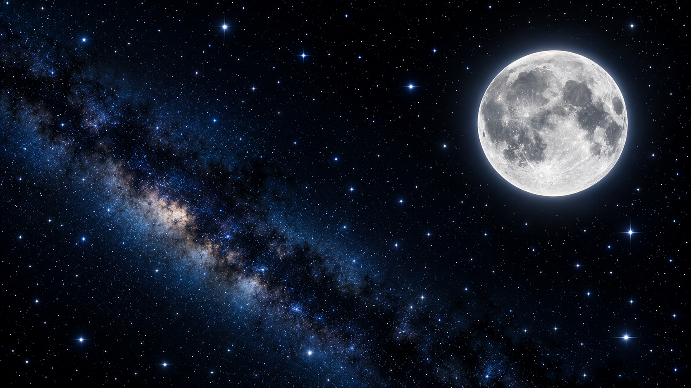
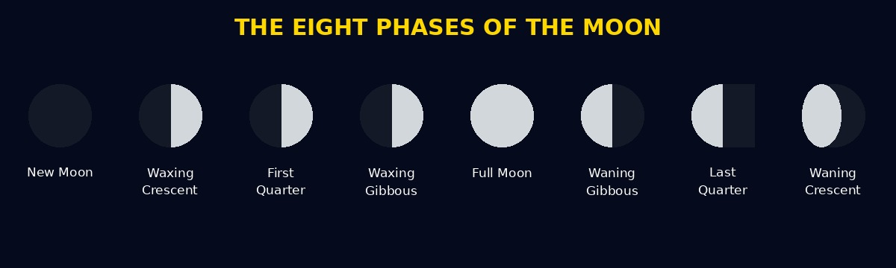

Welcome, Young Astronauts!
Today, our classroom is travelling to the Moon.

Explore. Discover. Learn.
Imagine that you and your classmates are astronauts. Your teacher is your space guide. Wear your helmets and enter the spaceship.
Our spaceship is travelling through space!
The Moon is Earth's natural satellite. It travels around Earth. The Moon does not produce its own light. We see it because sunlight reflects from its surface.

Different appearances of the Moon.
Astronauts wear special spacesuits to walk on the Moon. They collect rocks, take photographs and study the surface.
The Moon appears to change shape during the month.
A complete cycle takes about 29.5 days.
Listen to the teacher explaining the Moon.
Watch our video about exploring the Moon.
Our spaceship is returning to Earth.
Keep Learning. Keep Exploring. Reach for the Stars!
Back to TopMoon Explorers | Beginner HTML Project
Dedicated to Special People